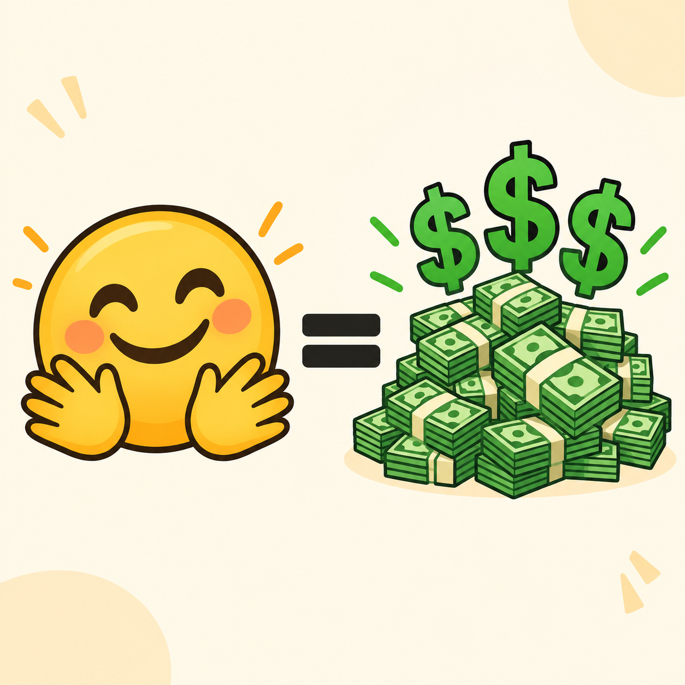

Zamienili emoji w grube miliony
Kanonical: ten adres. Kopia na FB: zobacz post na Facebooku.

Zamienili emoji w grube miliony. Było sobie kilku ziomeczków. Dokładniej trzech: Clément Delangue, Julien Chaumond i Thomas Wolf. Ale ja też najpierw czytałem tylko nagłówki, więc przez chwilę zakładałem, że to mógł być pojedynczy ziomal z laptopem, hoodie i pomysłem na firmę od AI. No, kurła, teraz każdy ma pomysł na firmę od AI.
Ale ci ziomeczkowie zamiast nazwy typu Neural Quantum Cloud Intelligence Platform wybrali coś znacznie głupszego. I przez to genialnego. Nazwali firmę: U+1F917. Nie wiecie, co to znaczy, prawda? Ja też nie wiedziałem, więc przez chwilę udawałem, że wiem. To kod Unicode dla emoji 🤗, czyli tego przytulaskowego „hugging face”. Czaicie? Nazwali firmę na cześć emoji. Przytulaskowego emoji.
To już mógł być koniec tej historii. Bo biznes AI oparty o emoji brzmi jak typowy scam krypto, gdzie ktoś sprzedaje token $HUG, obiecuje pasywny dochód i znika z Discorda po trzech dniach. Ale nie tym razem.
Hugging Face stał się czymś w rodzaju wielkiej publicznej biblioteki modeli AI, datasetów i narzędzi dla ludzi, którzy nie klikają tylko „Subskrybuj Pro”, ale sami grzebią w modelach, odpalają rzeczy lokalnie, testują, porównują i potem piszą na forach, że „u mnie działa”. Czyli to taka infrastruktura dla ludzi, którzy patrzą na AI i mówią: „Fajne, ale czy mogę pobrać 80 GB wag modelu i spalić laptopa?” Mogli.
Więc Hugging Face rosło. Stało się ważne. Znane. Używane przez developerów, badaczy, firmy i tych wszystkich ludzi, którzy mają folder models_final_v2_really_final. No i całkiem niedawno gruchnęła wieść, że to przytulaskowe emoji zostaje przejęte przez NVIDIĘ. Tak, tę NVIDIĘ. Firmę od kart graficznych, AI, centrów danych i spokojnego budowania realnego Skynetu, tylko z lepszą kapitalizacją giełdową.
I teraz skupcie się, psubraty, bo tu zaczyna się mięso. Kwota transakcji miała wynosić dokładnie: $12,930,300,000. Dwanaście miliardów dziewięćset trzydzieści milionów trzysta tysięcy dolarów. Niby zwykła kwota. Ale nie. Pierwsze sześć cyfr to: 129303. A 129303 to dziesiętny zapis kodu Unicode U+1F917. Czyli emoji 🤗. Tak. Oni naprawdę włożyli emoji w cenę transakcji.
Ale to jeszcze nie koniec, bo drugi easter egg jest jeszcze bardziej bezczelny: #129303 wygląda jak kod koloru. I według wyjaśnień, które poszły po sieci, ten kolor miał nawiązywać do zieleni NVIDII. Czyli w jednej kwocie upchnęli i Hugging Face, i NVIDIĘ. Emoji oraz zielony kolor korporacji, która sprzedaje łopaty w gorączce złota AI. To jest ten poziom nerdostwa, przy którym normalny człowiek mówi: „po co?”, a ktoś z Doliny Krzemowej odpowiada: „bo możemy”. I ja to szanuję.
Bo wyobraźcie sobie, że siedzicie przy stole negocjacyjnym. Ktoś mówi: „Panowie, wychodzi nam wycena około 13 miliardów dolarów”. A ktoś inny mówi: „Okej, ale czy możemy tak dobrać końcówkę, żeby zakodować przytulające emoji?” I nikt nie wychodzi z sali. Nikt nie mówi: „Może skupmy się na due diligence”. Nikt nie wzywa dorosłego. Po prostu wpisują w arkusz: 12,930,300,000. I świat idzie dalej.
To jest piękne. Bo większość ludzi całe życie próbuje zamienić swoje pomysły w pieniądze. Oni zamienili emoji w 12,9303 miliarda dolarów.
Potrafią konwertować.
Ale nie pliki.
Wyceny.